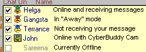

CyberBuddy museum copy · Original site by John M. DeFino · Arthur Tube unofficial continuation. Historical downloads and services may be unavailable. Continuation
Instant Messaging with speech and animation.
There is also a help section on Voice Messaging.
With CyberBuddy, you can send Instant Messages with Speech and Animation. You can send to one or many at the same time.
(Some shortcut keys are listed at the end of this section.)
Note: The features below that have to do with chatting with multiple buddies will only work if your buddies also have version 2.10.01 or later.
You can send a message to a friend, or group of friends, that are currently online, and also using CyberBuddy. The message will be spoken by your friend's CyberBuddy. In addition, your message can contain actions that will animate your friend's Agent Character. When you send a message, your friend's CyberBuddy program will speak the message in the character you have selected as the "Send Instant Messages" character in the Character and Speech Options page (if they have that character).
In order to use this feature you must know your friends CyberBuddy User ID Number (UIN). If your friend is listed in your "CyberBuddies List" on the "Buddies" page, their name, UIN and last time on should appear in the "Online List". A CyberBuddy Icon next to their name indicates that they are online now with CyberBuddy.
If your friend sends a message to you, their UIN will automatically be shown in the "Send to UIN address" box.
NOTE: If your internet connection is through a router or firewall, it may be necessary to set CyberBuddy to use Server Based messaging. Normally, when you use CyberBuddy Instant Messaging, you are talking to your friends directly, your computer to their computer. When Server Based messaging is selected, you talk to your buddy through a server. The option can be selected in Advanced Options. Do not select this unless necessary as it can cause your instant messaging to be slower.
Sending to One Person ( Private )
1. If your friend is on the "Online List" and a CyberBuddy Icon is next to their name, click their name,
or - Select from the "Send to Name" list.
or - Type your friends UIN in the space provided.
2. Type your message in the "Send" box
3. To the right of the Send button, make sure the button says "Private". if it says "Group", click on it to change.
4. Click the "Send" button (or press ENTER) to send
Sending to Many Buddies ( Group )
To send a message to a several Buddies
1. Check the boxes next to your Buddies names in the Online List.
2. Type your message in the "Send" box
3. To the right of the Send button, make sure the button says "Group". if it says "Private", click on it to change.
4. Click the "Send" button (or press ENTER) to send
Private / Group Button The button to the right of the "Send" button determines whether you are sending to a single individual listed in the UIN box, (this is the Private setting) or whether you are sending to Buddies in your list (Group setting). Click on this button to change it's setting.
Online List The Online List shows your CyberBuddies that are currently online. If you click on one of these contacts, the "Send to Name" and "Send to UIN" fields will be filled in automatically. If the CheckBox is checked, this Buddy will be sent a message when you Send to "Group".
If your Buddy is running CyberBuddy, you will see a CyberBuddy Icon next to their name (if you or they are not behind a firewall). If the Icon is a green, smiling CyberBuddy, your friend is ready to receive messages. If the Icon is a red CyberBuddy with a small frown, your friend is in "Away Mode" or is not receiving messages. If it is blue, it means that you are sending to a list of buddies, and that particular buddy is not receiving you. If it is green and looks like it is in a TV screen, it indicates your buddy is on with CyberBuddy Web Cam.
Shown below are the various online icons:

My IP / Using Reflector To the right of the online box will be a label that says "My IP:" or "Using Reflector". This tells you the state of your Instant Messaging connection. If it says "My IP:" then you are using the normal Instant Message Mode and this is your IP address. It is just for your information. If it says "Using Reflector" then you have have selected "Use Server Based Instant Messaging" in Advanced Options. If "Using Reflector" is green then your are currently connected to the Reflector Instant Messaging Server. If it is red, then the reflector server is down or there is a problem with your connection.
Online List Popup Menu For a list of operations, right-click in the Online Screen to bring up a menu. The following are items in the menu:
Synchronize with Checked Buddies Synchronizes with all active Buddies the List. See Synchronization below.
Add to Buddy List This function take the selected Buddy in your Online List and will add the selected Buddy to your "Buddies List" on the Buddies tab of CyberBuddy. In the future, your Buddy will be notified when you go online.
Remove From Online List Removes the selected user from the Online List.
Check All Checks All in the list.
UnCheck All Clears all in the list.
Block UINs If you wish to block messages from a particular sender, you can use the Block UIN feature.
Update List Status Normally, anyone in your Buddies list that comes online is detected and added to the Online List. You can ask CyberBuddy to update the list with this selection.
Pause List This is a handy way to temporarily quiet the incoming messages from the list. When paused, the messages can still be seen in the Receive Window, but they will not be heard. Private messages will still be heard. This is a great way to momentarily talk privately with someone without being bothered by the incoming messages from the Online List. When you are Paused, people sending messages to you in the list will see your status as being Away.
Synchronization CyberBuddy has a unique function that allows you to Synchronize your Online Contact list with those of your Online Buddies. Here's how it works:
Let's say you've just come online, and start chatting with Bob. Bob is already chatting with several other people. It happens that those other people are not currently in your Online List. If you right-click to bring up the menu, click "Synchronize with Checked Buddies". Now, all the Buddies that Bob is chatting with will be added you your Online list and visa versa.
Note: To see other people who are online. Go to the Buddies tab, click on the "CyberBuddy Buddies Page" button and go to the CyberBuddy online directory.
Animate-SFX You can add actions and sound effects to your instant messages. These actions will be expressed by your friend's character when the message is received. See the Add Animation section for details.
Auto Animate CyberBuddy automatically adds animations to your outgoing messages based on key words. Advanced users, see the Auto Animate section to see how these animations can be changed.
Send To UIN This is your friend's CyberBuddy User Identification Number (UIN) or current IP address.
If your friend is in the Online List, you can get this automatically. Click on the desired name in the online list. The UIN and name will be filled in.
If your friend has just sent you a message, their UIN and Name will appear in the appropriate boxes automatically.
Name This is the CyberBuddy name of the person that you are sending to.
When someone sends to you, their name is put here. This is a drop down box that will remember the names and UIN of the last 15 different names that have sent to you.
Also, when you click on a name in the contact list, the name will show here.
Receive Message Window (RCV) You will see your incoming messages here. When a message is received you will see the person's name, and the character they are using (if they have ver 2.08 or later). If you were away when the message came in, you will see the time the message came in. When you receive a message, the message will be spoken by the character of the sender (if the sender has ver 2.08 and you have the character installed). If you do not have the character of the sender, your character will not change. If the Senders name is in brackets like this; [Sender] then the message was sent Privately, if the message is in brackets like this; <Sender> then the message was sent to the group. If there is a hyperlink in the message, it will be highlighted and underlined. You can double-click the hyperlink to open it in your browser.
Send Message Window (SEND) This is the area to type in your message to send. There are a number of Text Shortcuts and ShortCut Keys that can be used. You can also define User Definable ShortCut Keys for quick entry of messages and animation when chatting.
Send Sends your message to your friend. If the message was received, your message text will clear in the Send box.
You can also "Send" by pressing CTRL-S or ALT-S on the keyboard. If the "Enter Key Sends" option is checked, the Enter key will also send.
Preview Allows you to see how your message will sound and appear on your friends computer.
Clear Clear the text in the message screen;
Ping You can see if your friend is online and using CyberBuddy. Click the Ping button, with your friends UIN or IP address in the "Send to UIN or IP Address" box. If your friend is online, and is using CyberBuddy, CyberBuddy will inform you. No response indicates your friend is not online with CyberBuddy.
Page This is the CyberBuddy Paging function. Use this function to Page your buddy if they are not otherwise responding. When a Page is sent, your buddy's CyberBuddy program will alert them that you are trying to reach them. The page will be received even if they have their list paused, are in away mode, or their screen saver is on. When a page is sent, it will send a loud alert sound on the recipients computer.
Tip: If you are busy or away from the computer, you can lower your computer volume or pause your online list and tell your friends to page you if they need you.
Note: Pages will only be received if the recipient has the sender in their contact list or online list and they are "checked" in the list. The recipient must also have "Paging" enabled in the Advanced Functions section.
Note on Sending Messages:
The message sending function uses a point to point communication protocol. No servers are usually involved in the communication. This means that the messages are sent fast but the message sending function may not work if you or your friend are behind a firewall, router, or are using a proxy server. If you are on a LAN or behind a router, you may need to set "Use Server Based Instant Messaging" in the Advanced Options of Cyberbuddy.
Say Who From At the start of each message received, CyberBuddy will say Who the message came from.
Play What I Send If you like to hear what the messages you send sound like, check this box.
Show What I Send When this box is checked, you outgoing messages will be shown in the Receive Message area along with your received messages.
Enter Key Sends When this box is checked, the Enter Key will send the message the same as clicking the "Send" button.
Popup on Message When this box is checked, an incoming message will cause the CyberBuddy screen to popup and show the "Chat" page.
Save Chat to File When this box is checked, your Instant Message chat sessions will be saved to a file. You can review this file at a later time by clicking on the Saved Chat button that will appear when this box is selected.
Saved Chat If the Save chat to File box is checked, a button will appear that allows you to review the saved chat file.
CyberBuddy Web Cam If you have the CyberBuddy Web Cam installed a "CAM" button is displayed to start the Web Cam.
CyberBuddy Games If you have CyberBuddy Games installed, a "Games" button is displayed to start the Games Module.
Auto Correct Sometimes, when we use Instant Messaging, our fingers fly across the keyboard faster than we are thinking about spelling and such. CyberBuddy tries to catch some of the common errors and correct them when you send. You can alter the way CyberBuddy does this. Check the Auto Correct section.
Text Short Cuts The following common abbreviations will convert to the indicated text:
lol : ha! (looks pleased)
rofl : ha ha ha-hah! (gestures up)
cu : C U (waves)
tx : Thanks! (waves)
ru : R U
btw : By The Way
wb : Welcome Back!
brb : Be Right Back
bbl : Be Back Later (waves)
ic : IC
*g* : (looks pleased)
*s* : (looks sad)
Sound effects short cut words:
bellylaugh : sounds a big laugh
tvsoap : sounds a soap opera music file
playsuspense: plays a suspense organ file
moo : makes a cow noise
fanfare : trumpet fanfare
applause : sounds applause
bigbell : sounds a big bell
yo : says Yo!
Check the CyberBuddy homepage for additional sound effects shortcuts
Shortcut Keys (You can also define your own shortcut keys in the Send Shortcuts Window).
Name Shortcut When sending Instant Messages, some of your buddies may have long nicknames. To assist in typing their names in your messages there are two shortcuts:
1. Double click their name in the online list and it will be copied into the "Send" box.
2. Type a couple of letters of their name then hit the F1 key. CyberBuddy automatically searches the active users in your online list and copies the name of the first match into the "Send" box.
ENTER key sends the message (if the "Enter Key Sends" box is checked)
F1 - Name Shortcut key (see above)
F2 - Brings up the Short Cut Key Entry Screen for ALT0 through ALT9 shortcuts.
F3 - Brings up the Animation/Sound Effects Window in the "Animate" Mode
F4 - Brings up the Animation/Sound Effects Window in the "Sounds" Mode
F9 - F12 Animation/Sound Effect Shortcuts as Assigned in the Animate Window.
(The shortcut keys below can be upper or lower case)
CTRL-S or ALT-S sends the message.
These shortcut keys add animations to the message ALT-R adds a random gesture to message.
ALT-E adds "explain" gesture to message.
ALT-W adds "wave" gesture to message.
ALT-G adds "Greet" gesture to message.
ALT-F adds "Fly" gesture to message.
ALT-P adds "Pleased" gesture to message.
ALT-T adds "Think" gesture to message.
ALT-C adds "Confused" gesture to message.
ALT-A adds "Announce" gesture to message.
ALT-X adds "GetAttention" gesture to message.
ALT-U adds "Uncertain" gesture to message.
ALT-0 through 9 are User Defined shortcut keys, set in Advanced Options.
These shortcu keys add speech tags to the message CTRL-R "Robot Voice" monotone
CTRL-W Whisper
CTRL-E Emphasized word
If you double-click in the Send Window, the word emphasis tag (\emp\) will be placed at the cursor position.